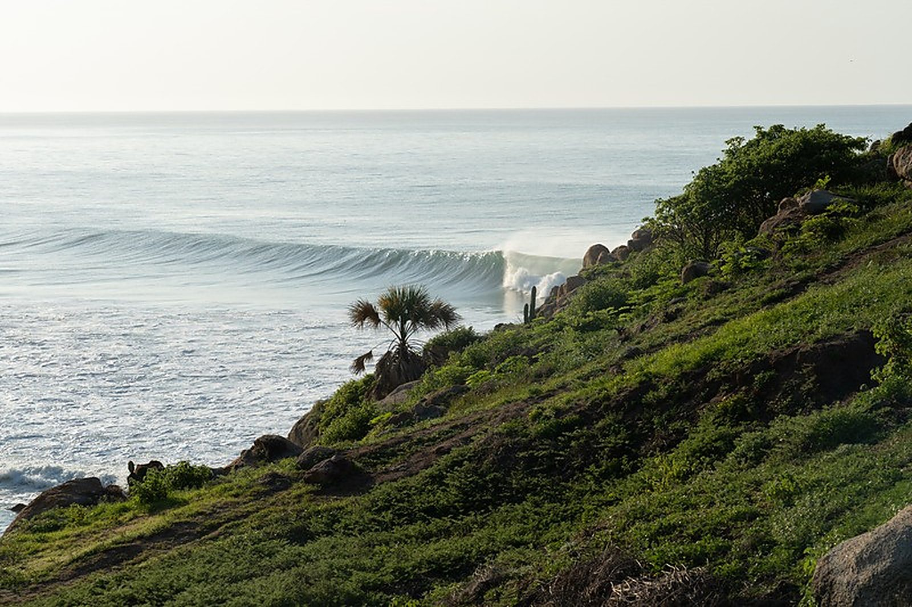
Las mejores olas locales de la costa de Oaxaca, con un guía certificado que se encarga de convertir tu surftrip en una experiencia de por vida.
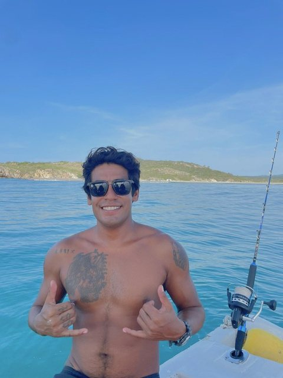
Tengo 31 años y nací y crecí en Bahías de Huatulco, Oaxaca.
Empecé a surfear a los 15 años y un par de años después empecé a trabajar en la industria del surf como guía local y filmer.
Soy miembro de la Cooperativa de Surf de Huatulco y estoy certificado como salvavidas, además de varios cursos de atención en el agua.
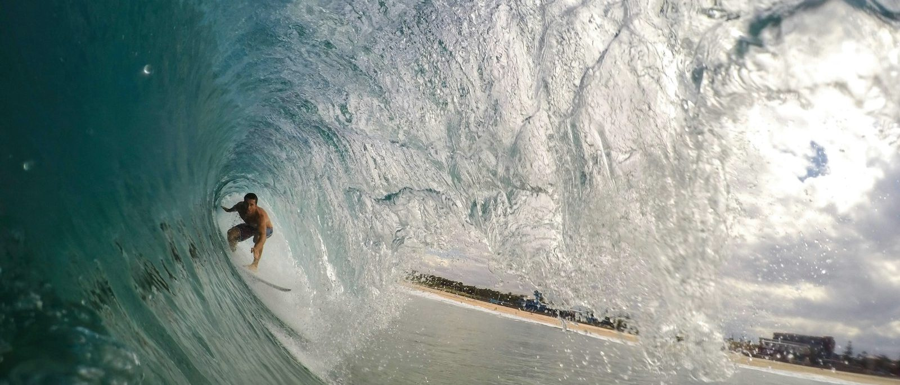
Go Surf te da la experiencia de surfear las mejores olas locales de la zona con un guía certificado. Incluye transportación, comida, bebidas, botiquín y sombra — y siempre con ganas de mostrarte nuestra cultura y lo bonito del México continental.
Precios en pesos mexicanos, por persona y por día de surf. Entre más grande el grupo, más barato sale por cabeza. Se paga en efectivo o transferencia el día del trip.
ReservarLos picos de Huatulco no están en una avenida: hay que bajar entre nopales, monte y piedra hasta la playa. Esa caminata es parte del trip.
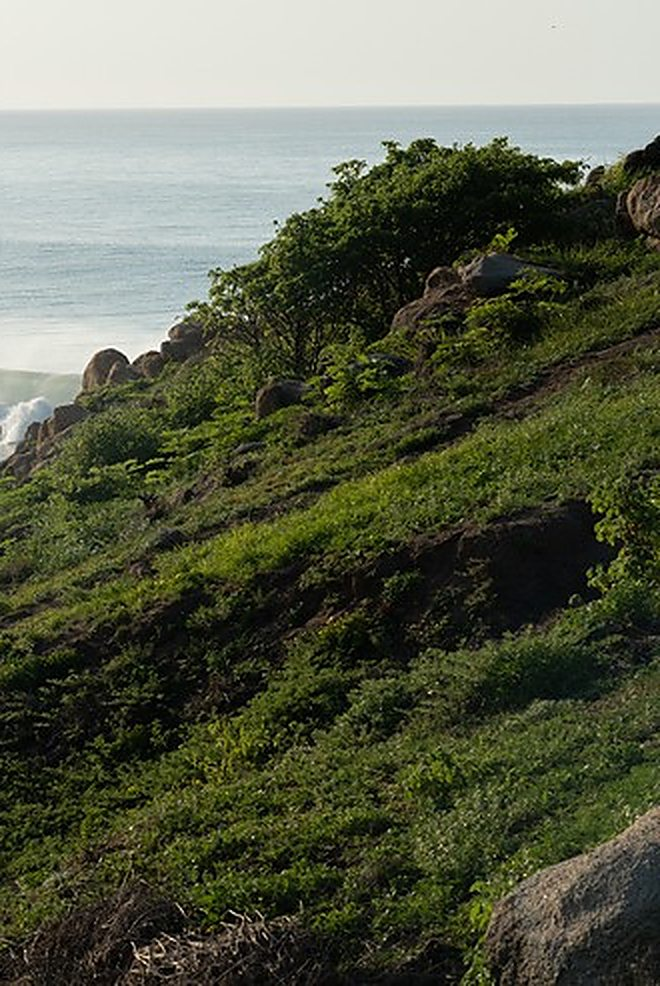
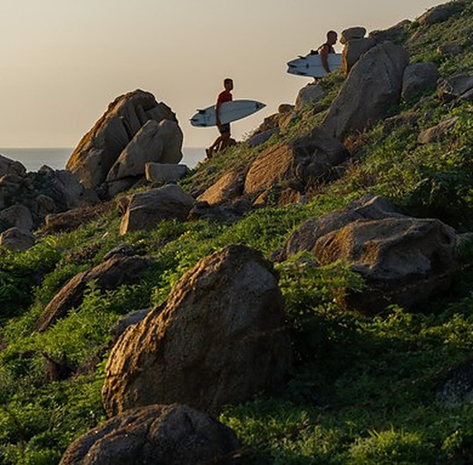
“Siempre con ganas de mostrarte nuestra cultura y lo bonito del México continental.” — Robert
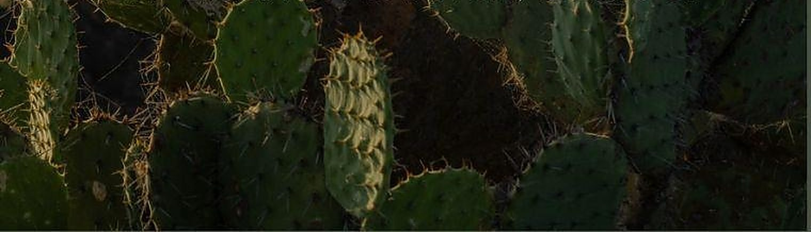
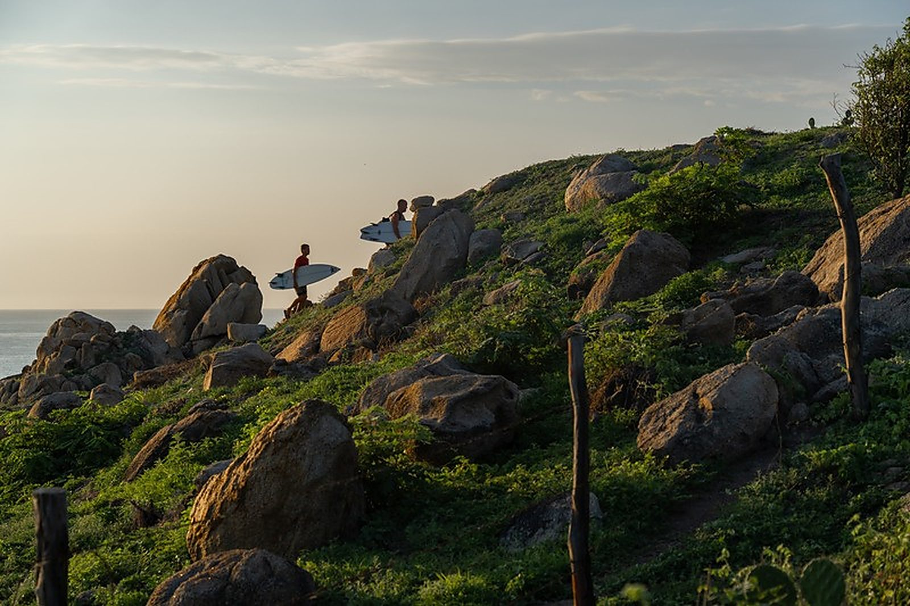
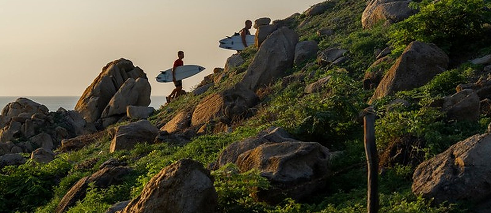
Derechas largas de point, beach breaks que rompen todo el año y reefs que solo entran con la marea justa. Swell del sur casi todo el verano y muy poca gente en el agua.
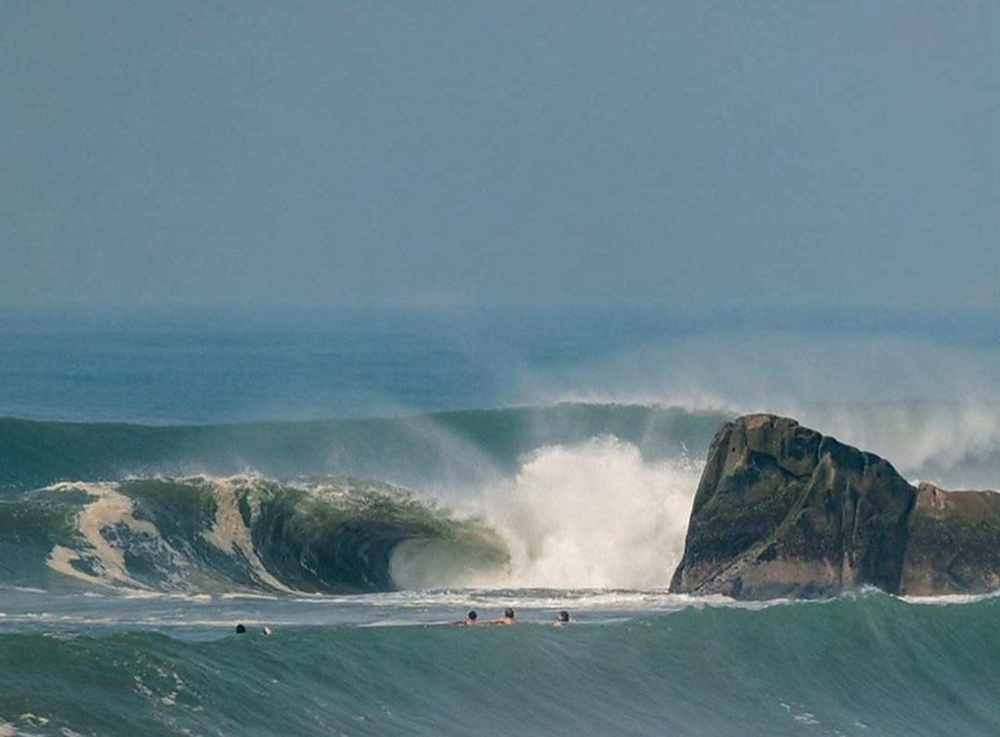
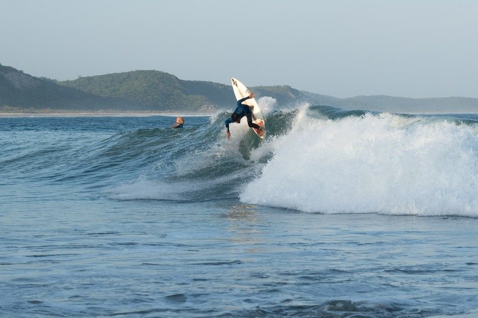
Robert también tiene su propio beach club, y abre justo los fines de semana.
@puravida.beachclub Preguntarle a Robert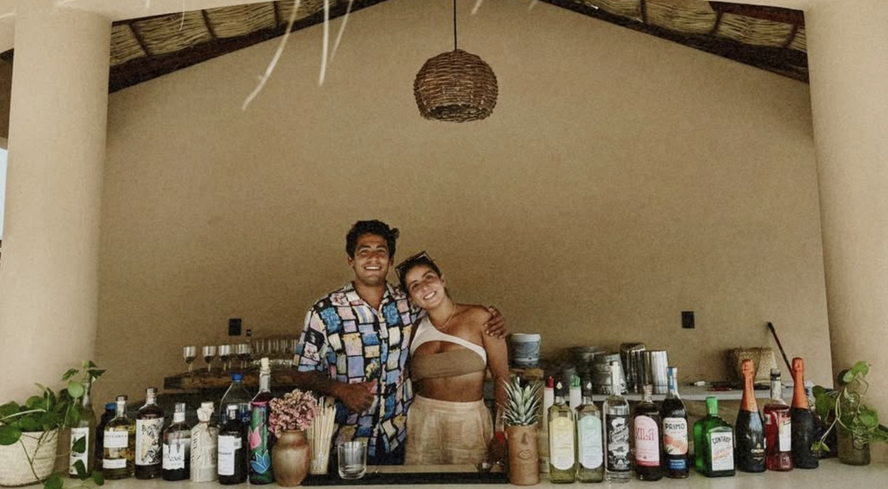
Además de guía, Robert trabaja como filmer en la industria del surf. La filmación se cobra por sesión, aparte de la tarifa del trip, y la puedes agregar al reservar.
Desde el agua y desde la playa, en las sesiones del trip.
Te los entrega para que los uses donde quieras.
No entra en la tarifa de surf. Se suma al desglose cuando lo agregas.
No publicamos dónde están, a propósito: los picos buenos aguantan poca gente y se cuidan solos mientras nadie los ponga en un mapa. Robert decide a cuál vamos la mañana del día, leyendo swell, viento y marea. Algunos están a diez minutos; a otros hay que manejar un buen rato.
Escoge qué servicios quieres, mira el desglose y aparta tu día con el anticipo. Lo que no quede claro, se cierra por WhatsApp con Robert.
Cada servicio se cobra por separado y lo ves desglosado antes de pagar.
La tarifa es por persona y baja conforme crece el grupo.
Para escoger el pico correcto y no quemarte el viaje.
Un día de surf por cada día que reserves. Los días tachados ya están apartados.
Robert lleva un solo grupo por día. Puedes escoger otra fecha — o mandarle mensaje de todos modos: a veces se mueve algo.
Igual quiero ir — escribirleRobert responde normalmente en unas horas.
Revisa el desglose. Aparta tu día pagando el anticipo, o mándaselo a Robert por WhatsApp para cerrar con él.
Mándale a Robert tus fechas y él te dice qué está rompiendo.